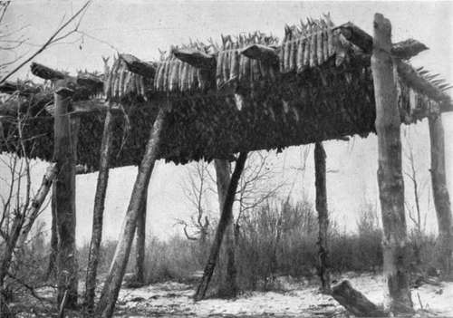

Sled-Dogs Of The North Trails. Part 3
Description
This section is from the book "Wild Life In Canada", by Angus Buchanan. Also available from Amazon: Wild Life in Canada.
Sled-Dogs Of The North Trails. Part 3
Everywhere in the North native laws of man and beast are stern, even merciless; the outcome, perhaps, of living half the year face to face with the powerful elements of winter, eternally fighting for an existence within the zone of the greatest counterforces of life to be met with in the whole wide world. Thus it appears, at first sight, brutal to a stranger to witness the Indians punish their dogs on the slightest provocation, and it is brutal in a delicate sense, but not so in the mind of Indian or dog, for both are of a vigorous outdoor world, and of primitive hardihood. Indians have full experience of sled-dogs. They are masters of the situation; were their dogs allowed to run unchecked all summer, or be humoured by pampering kindness, they would be useless as sled-dogs when the snows came. Hard blows teach them always to respect the power of man, and to stand back at a respectful distance and in due humility.
Regarding dog punishment, I have only once witnessed a squaw severely deal with one of those provoking animals. Her men-folk were away hunting, and her peculiar method was to tie the culprit to an alder bush and belabour him mercilessly with a heavy pole until one thought that if she did not cease speedily the dog would be beaten to death. He had stolen something, poor hungry, wolf-natured brute-and he would steal next hour, I wager, if the chance arose, licking or no-only with a little more caution, a little added resolve that his cunning would outwit his masters.
At freeze-up I have seen young dogs that have never before been caught and harnessed prove so savage when handled that they could not be put in the traces until stunned with a blow on the head. For two or three days such dogs are unmanageable, but in the end they become tractable and often prove splendid, hard-working, high-spirited beasts of burden.
You will have gathered from these remarks that the sled-dog is for ever in the foreground at the Far North fur Posts-numerous beyond all other things-and that is true of them.
I will deal in detail with the foods on which sled-dogs are fed, and then take you to the sled and the snowfield ; that which is their purpose of existence, and where their endurance and courage overcome the bleakest wastes in all God's Universe.
What food the natives subsist on is also the food of their dogs. The year round the native and dog community of Fort Du Brochet, and of many Far North Posts, live almost exclusively on fish with the addition, in winter, of what deer-meat the Caribou migrations provide. Raw fish, fresh from the water in summer, or frozen in winter, is the chief dog-food the year round, and on this they thrive. And, in this respect, it is certain that the fish on which the dogs of the outermost Posts are fed has played an important part in retaining, perhaps even developing, the fine physique which the breed obtain along the trails of the Hinderland, for the fish from the pure cold waters of northern lakes are of surpassing excellence. The dogs themselves, when occasion occurs, show discriminating taste, and marked preference for their home fish, for, in the winter, should any dog-team go south to the Posts of the Frontier it is noticeable that while being fed on fish from inferior waters they will eat without relish and with an air of distaste, and deteriorate in weight and strength.
Sled-dogs as a rule will eat any of the varieties of fish that are caught in the North-Whitefish, Trout, Jackfish (Pike and Pickerel), Black and Red Suckers, and Dory-but when not ravenously hungry, and the opportunity offers, they will show a nicety of taste, and their preference, by selecting the Whitefish, which is the choicest to the human palate also.
In a country where food is the one great problem of existence, providing for the sled-dog is no small matter, particularly in winter. Therefore on the eve of the great freeze-up, with purpose to store a large supply of fish for winter dogfeed, Fall fishing on an extensive scale is yearly undertaken by the Indians. When the weather turns cold in late September or early October, all the Indians of a permanent camp depart to their well-known fishing-grounds-women, children, dogs, teepee-covers, cooking-dishes are bundled into canoes by their menfolk, and all set out for the various river outlets, where fish at that season congregate in their quest of spawning grounds. Each Indian will set from three to four long gill-nets (usually 200 feet x 4 feet, with 2-inch mesh-manufactured, not native made), and those he visits once a day in the cold grey autumn dawn before wind rises ; and as a rule he brings in between one hundred and two hundred fish. When landed the Indians and their squaws slit the fish through the body some little distance from the tail, and truss them in tens on green willow-rods of about two feet length. They are placed in groups of ten so that one stick conveniently allots a day's rations to a five-dog train-the usual number driven in northern territory. Large stages constructed with the trunks of trees are erected, and across the stalwart framework, from side to side, poles are spaced overhead to form racks that receive the short rods of trussed fish, which then hang suspended, head-downwards, well out of reach of dogs or wild animals. Here the fish are frozen-sometimes completely, sometimes partially, depending on weather; and keep, on the whole, almost completely fresh until the hour the thermometer drops to zero and the great freeze-up sets in. When heavy snow has fallen, and sleds are out, the frozen fish are transported from the stages at the fishing-ground, and stored at the Indians' cabins.
Timber Stage On Which Is Hung The Autumn Catch Of Fish For Dog-Food

Continue to:
- prev: Sled-Dogs Of The North Trails. Part 2
- Table of Contents
- next: Sled-Dogs Of The North Trails. Part 4